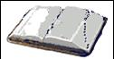

Webster’s Dictionary says…
•lan·guage
Pronunciation: 'la[ng]-gwij, -wij
Function: noun
Date: 14th Century
1 : A body of words and systems for their use common to a people of the same nation or community. 2 : Any
system of formalized symbols, signs, etc. used as a means of communication.
Could
a language be all NUMBERS?
